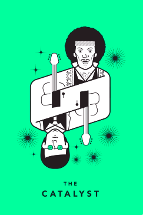

<!-- Template for instructions page

<h2 class="bolded-blue" data-i18n="litw-instruct-header"></h2>

	<p data-i18n="litw-instruct-body-1-p1"></p>

<div class="instructions-stim-container">
	
	
</div>

{{#if withTouch}}
	<p data-i18n="litw-instruct-body-2-p1-touch"></p>
	<p class="bolded-blue" data-i18n="litw-instruct-body-2-p2-touch"></p>
{{else}}
    <p data-i18n="litw-instruct-body-2-p1"></p>
    <p class="bolded-blue" data-i18n="litw-instruct-body-2-p2"></p>
{{/if}}
-->

<!--Template for the pre-trial break page -->


<h2 class="bolded-blue">You are reading the Tarot Cards of Mixed Reality (XR) Tech</h2>

<p data-i18n="cards-prompt"></p>





<!-- TODO
Make cards clickable 
Give cards a pop-up
Remove extra pages
Save data
Make DB
-->
